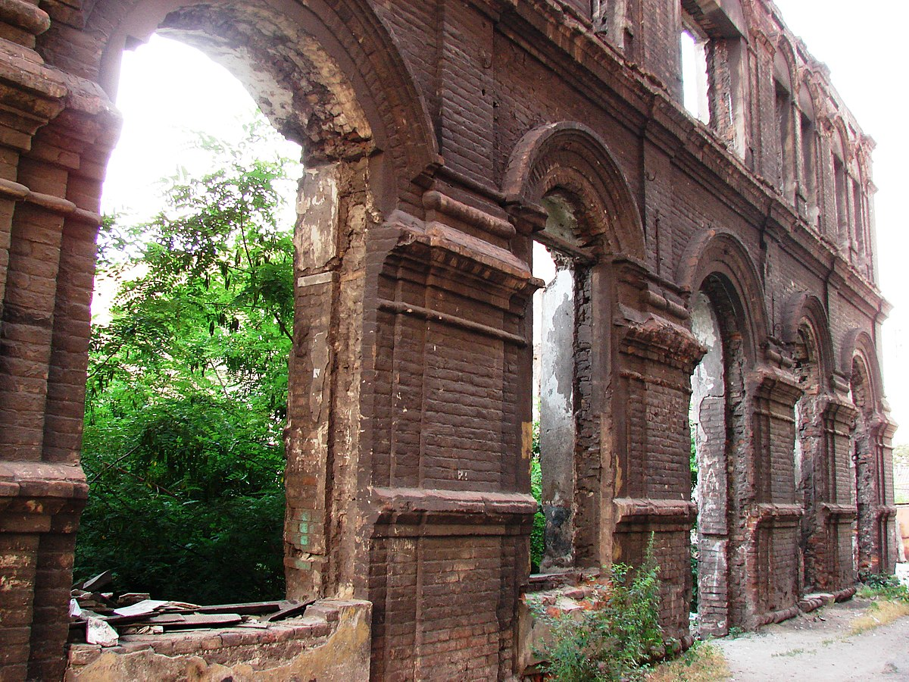
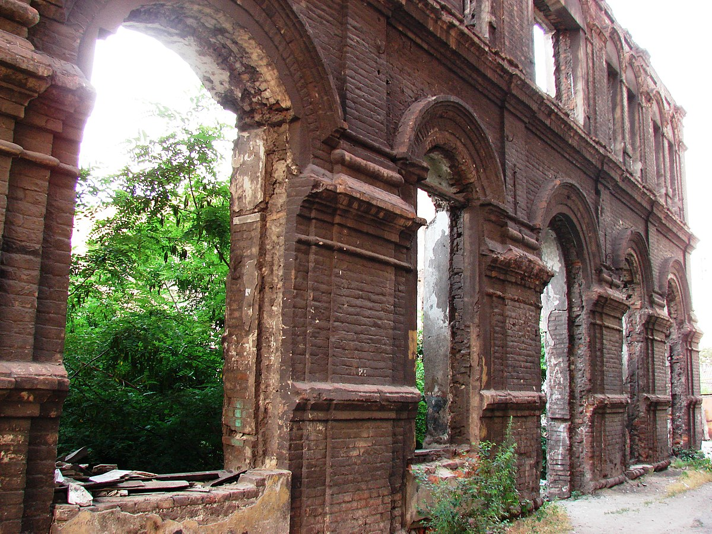

Назва міста
- Домаха — у XVI столітті, як вартовий пост;
- Павловськ — у 1778—1779 роках;
- Жда́нов — у 1948—1989 роках;
- Маріу́поль — 1780—1948 та з 1990 років. Дослівно означає «місто Марії». У 1779 року зустрічалися назви як Маріанополь та Маріу-Поль.
Альтернативна назва українською, відповідно до «клясичного правопису» — Маріюпіль, офіційно використовувалася в 1930-ті роки. У 1910-х — 1930-х роках використовувався варіант написання Маріупіль, Мариупіль. У XIX столітті українським населенням місто називалося Марнопіль.
Символіка
Сучасний варіант герба використовує композиційні принципи й кольори герба зразка ще 1811 року. Щит розділений горизонтально на дві рівні частини. Зверху поле срібного кольору, знизу — синє. Лінія розділу хвиляста. Синій колір і хвиляста лінія символізують море, тому що Маріуполь — портове місто. Срібне поле символізує виробництво сталі. У центрі герба зображений якір — символ портового міста. Причому, сам якір складається з ковша (кільце якоря), що виливає метал по контурі й цифр 1778 — року заснування міста.
У Маріуполі відзначаються дати місцевого значення: День визволення міста від нацистських загарбників (10 вересня), День визволення від російських окупантів (13 червня), День міста (перша неділя після дати 10 вересня), а також професійні свята: День металурга, День машинобудівника, День моряка та інші.
Історія
Сучасне поселення в гирлі Кальміусу засновано в XVI столітті запорізькими козаками як вартовий пост Домаха для захисту зимівників, промислів і шляхів сполучення від нападів кримських татар. Матеріали архіву Коша Нової Січі свідчать, що у XVIII ст. під прикриттям Домахи виросла Кальміуська слобода, у якій завдяки старанням полковника Андрія Порохні 1754 року була збудована кам'яна Свято-Миколаївська церква. Тобто, користуючись тодішніми європейськими традиціями, які прив'язували поняття міста до кам'яних будівель, зокрема храмів, саме цей рік можна вважати заснуванням міста. Так вважає відомий історик Східної України Василь Пірко.
Заснування
У 1776 році на місці козацького поста Домахи створена Кальміуська слобода. У 1777 році закладена Свято-Миколаївська церква-храм, що перебувала у Кальміуській фортеці. В 1778 році поблизу слободи закладене повітове місто Павловськ. У ньому тоді налічувалося 75 жителів, у слободі 93. Цей рік офіційно вважається датою утворення Маріуполя. 21 травня 1779 року імператриця Катерина II дарувала грамоту, відповідно до якої «переселенцям із Криму дарувались привілеї й свободи». У грамоті місто йменувалося «Маріанополь», тобто місто Марії. 24 березня 1780 року на наполегливу вимогу митрополита Ігнатія місто остаточно перейменоване в Маріуполь, на честь Марії Федорівни, дружини Павла I. Частина прибулих греків у липні 1780 року оселилася в місті, а більшість — довкола нього. Кожному зі своїх селищ греки давали назви тих населених пунктів Криму, звідки вони прийшли. Так виникли села Бахчисарай, Ялта, Урзуф, Сартана, Чердакли, Карань, Мангуш тощо. Грузини та волохи заснували село Ігнатівку.
Головним заняттям жителів купецького міста була торгівля. На березі моря на околицях міста було до 20 рибних заводів, які приносили маріупольським купцям великі прибутки. У 1783 році, коли Кримське ханство було приєднано до Російської імперії, частина греків повернулася в рідні місця. Землі, що звільнилися, були роздані новим переселенцям, виникли німецькі колонії. У 1829 році на південному заході повіту оселилися козаки, що повернулися із Задунайської Січі. Вони заснували низку сіл (Нікольське, Бойове тощо). В 1820 році було організоване переселення хрещених євреїв і німців-менонітів. У Маріуполі, окрім греків, дозволено було селитися євреям та італійцям. В 1807 році Маріуполь і 23 грецькі села було виділено в грецький округ із підпорядкуванням Таганрозькому градоначальству, а з 1859 року — Катеринославському губернському правлінню. У 1840-х роках почалося заселення Слободки відставними солдатами і матросами.
У 1824 році італієць Кавалотті почав будувати в Маріуполі судна вантажопідйомністю 135—160 тонн. У 1840 році від центра до біржі була прокладена бруківка. У 1840 році споруджено кам'яну набережну. Олександр I був у місті в червні 1818 року й у листопаді 1825 року. У травні 1820 року російський поет Олександр Пушкін відвідав Маріуполь під час подорожі з Катеринослава на Кавказ. У жовтні 1837 року місто відвідав цесаревич Олександр Миколайович (майбутній імператор Олександр II), у почті якого був серед інших Василь Жуковський. Значний збиток був завданий Маріуполю під час Кримської війни 1853—1856 років. Морська торгівля через воєнні дії була припинена. Навесні 1855 року англо-французька ескадра ввійшла в Азовське море. 24 травня під прикриттям корабельної артилерії в Маріуполі було висаджено англо-французький десант, що знищив склади в порту, спалив декілька будинків у місті.

Маріуполь XIX століття був одноповерховим. Із 3 084 будинків тільки 34 були двоповерховими і тільки 3 будинки — триповерховими. У 1864 році був закладений Міський сад. У 1867 році була відкрита громадська лазня. У 1871 році почалося мощення міських вулиць і площ бруківкою. 15 липня 1875 року встановлені перші 100 гасових ліхтарів для освітлення вулиць (до 1914 року їх уже було 686). У 1889 році на Олександрівській площі закладений центральний сквер.
Період УНР
30 грудня 1917 року Маріуполь захопили більшовики. Впродовж кількох наступних років Маріуполь 17 разів переходив із рук у руки.
Радянський період
У 1920 році були націоналізовані й об'єднані металургійні заводи «А» («Нікополь Маріупольський») і «Б» («Російський Провіданс») в один завод «Імені Ілліча». В 1923 році в Маріуполі організоване літературне об'єднання «Дзвони Азов'я». 1 травня 1929 року вийшов у світ перший номер газети «Іллічівець». 1 травня 1933 року була пущена перша трамвайна лінія «Гавань Шмідта — Вулиця Франко».
З 1930 року Маріуполь перетворився у величезний будівельний майданчик.
Маріуполь став центром компактного проживання грецької діаспори, біля нього були організовані два грецьких
національних райони: Сартанський (із центром у селища Сартана (тепер у складі Кальміуського району
Маріуполя)) і Мангуський (із центром у селищі Мангуш). У самому місті був відкритий педтехнікум із грецькою
мовою викладання, а також 14 грецьких шкіл. Маріуполь пережив масований наплив населення, в основному зі
Сталінського й Запорізького округів, у результаті чого населення міста до 1939 року зросло майже наполовину
й почало втрачати свою самобутність.
Друга світова війна
З початком Другої світової війни Маріуполь із його величезною промисловою базою був переведений на військові потреби країни. Багато колишніх робітників маріупольських заводів брали участь у війні з Фінляндією (30 листопада 1939 — 13 березня 1940 років).
8 жовтня 1941 року Маріуполь був захоплений частинами 3-го танкового корпуса 1-ї танкової групи вермахту (група армій «Південь»), у результаті чого почалася 23-місячна окупація міста. 16 місяців Маріуполь перебував у прифронтовій зоні. Виходила українськомовна «Маріюпільська газета», наклад якої з 1000 примірників у листопаді 1941 зріс до 27 000 у вересні 1943. Працювало 42 школи, викладання здійснювалося українською мовою.
У грудні 1941 року в Маріуполі перебували перші особи Третього Райху, Італії й Румунії. 6 вересня 1943 року при відступі військ було знищено все промислове устаткування, зруйновано чисельні будівлі. Усього за час окупації в місті розстріляно й замучено понад 50 тисяч жителів. У ніч із 9 на 10 вересня 1943 року в порту висадилися загони Азовської Військової Флотилії.
Повоєнна радянська доба
Маріупольці приступили до відбудови зруйнованого господарства. В 1960—1961 роках Портовське селище й селище заводу імені Ілліча були з'єднані з містом житловими кварталами з розвинутою спортивною інфраструктурою. У порту споруджувалися нові причали й цілі райони. В 1953 році в місті було створено Азовське районне керування Чорноморського пароплавства, що в 1967 році перетворилося в Азовське морське пароплавство.
22 жовтня 1948 року місто було перейменовано на Жданов — за прізвищем радянського партійного й державного діяча Андрія Жданова, що народився тут в 1896 році. 7 січня 1971 року указом Президії Верховної Ради СРСР місто Жданов нагороджене орденом Трудового Червоного Прапора. 7 вересня 1978 року указом Президії Верховної Ради СРСР місто Жданов нагороджене орденом Жовтневої Революції. Перебудова в СРСР принесла багато змін у громадське життя міста. На початку 80-х років у місті поширилася підліткова злочинність (так звані «війни мікрорайонів»), внаслідок чого Жданов тоді вийшов на перше місце в СРСР за рівнем злочинності. 13 січня 1989 року місту Жданову на прохання його жителів повернута історична назва — Маріуполь. Демонтували три пам'ятники Жданову, закритий його меморіальний музей. В 1989 роках у школах міста вперше почали викладати грецьку мову.
Новітня історія
У вересні 1991 року над маріупольською міськрадою вперше на сході Україні був піднятий український національний прапор. Тоді ж у місті відкрився перший гуманітарний ЗВО міста — Маріупольський гуманітарний інститут. Економічна криза обернулася згортанням домобудівництва й зупинкою майже всіх державних промислових підприємств. У 1999 році контрольний пакет акцій «Азовсталі» був викуплений промисловою корпорацією «Індустріальний союз Донбасу». 2 листопада 2000 року Верховна Рада України прийняла закон про продаж контрольного пакета акцій ВАТ «ММК імені Ілліча» трудовому колективу, що стало безпрецедентним випадком у новітній історії України.
24 жовтня 1996 року завдяки ініціативі грецької діаспори Приазов'я в Маріуполі було відкрите консульство Грецької Республіки. За підсумками 2002 року Маріуполь був визнаний найкращим містом України за благоустроєм.
З початком російської агресії Маріуполь, завдяки важливому стратегічному значенню, стає одним із ключових міст російсько-українського протистояння. З 13 квітня 2014 року, місто контролювалося проросійськими терористичними формування «ДНР». 13 червня 2014 місто було визволене від терористів силами добровольчих українських батальйонів, тим не менше місто залишалося вразливим для терактів, найбільший із яких стався 24 січня 2015.
У визволене місто було перенесено Донецьку ОДА, а в липні передислоковано Донецьке обласне управління МВС України та Донецьку обласну державну адміністрацію, тим самим зробивши місто фактично центром Донецької області. 14 серпня у місті було повалено пам'ятник Леніну.
У серпні 2016 року місцевий телеканал Громадське телебачення Приазов'я завершив цикл документальних фільмів Місто героїв, який описує життя Маріуполя у 2014—2016 роках.
Російське вторгнення в Україну 2022 року
З 1 березня 2022 року місто перебуває у блокаді російських окупаційних військ[25]. За даними Маріупольської міськради станом на 14 березня кількість загиблих мирних жителів у зв'язку з вторгненням Росії в Україну становить понад 2,3 тис. осіб. Російські війська застосували тактику облоги з блокуванням доставки гуманітарної допомоги жителям міста. Також за інформацією від міськради, окупанти незаконно перевозили жителів Маріуполя на територію Росії та ОРДЛО.
6 березня 2022 року Указом президента України Володимира Зеленського Маріуполю присвоєно звання Міста-героя.
9 березня на Маріупольський пологовий будинок № 2 російські літаки скинули декілька бомб, у результаті будівля була зруйнована. Внаслідок авіаудару сімнадцять осіб постраждало, троє загинуло.
16 березня окупаційні війська скинули бомбу на Маріупольський драматичний театр. Зруйнована центральна частина будівлі. На час авіаудару в сховищі театру переховувались мирні жителі та біженці. Також через авіаудар була зруйнована будівля басейну «Нептун».
19 березня російські військові скинули бомби на Маріупольську школу мистецтв № 12, що на Лівобережному районі. На час авіаудару в будівлі переховувалося близько 400 жителів міста. А 20 березня, за даними від полку «Азов», місто обстріляли чотири кораблі військово-морського флоту Росії.
6 квітня 2022 року Маріупольська міська рада повідомила, що після міжнародного розголосу подій у місті Буча Київської області, в Маріуполі російські окупаційні війська запустили в роботу мобільні крематорії, де спалюють тіла загиблих внаслідок російського вторгнення.
З огляду на розміри міста, катастрофічні руйнування, тривалість блокади та жорсткий спротив, жертвами окупантів стали десятки тисяч цивільних маріупольців. Саме тому Росія не поспішала давати зелене світло місії Туреччини та іншим ініціативам із порятунку та повної евакуації мешканців Маріуполя.
Архітектура
Старий Маріуполь (район, відокремлений на півдні — узбережжям Азовського моря, на сході — річкою Кальміус, на півночі — бульваром Шевченка, на заході — проспектом Металургів) забудований головним чином малоповерховими будинками, зберіг свою дореволюційну архітектуру. Лише вулиця Куїнджі (тоді — Артема) та проспект Миру (тоді — Леніна) були забудовані після Німецько-радянської війни сучасними будинками так званої «сталінської» архітектури, наприклад, два будинки зі шпилем на Театральній площі, будинком драмтеатру, ДОСААФ на місті зруйнованого собору, будинок Дитячого Світу (сучасний будинок банку ПУМБ), універмаг «Україна» (в колишньому ЦУМ). Цікавою є забудова частини Лівого берега міста малоповерховим житловим масивом 1950-х років з затишними дворами. З'явилися в місті й висотні будівлі в 9—12 поверхів.
Центральний район Маріуполя (від проспекту Металургів до проспекту Будівельників) — це майже винятково адміністративна та комерційна забудова (будинок міськради, поштамту, кінотеатр імені Лукова, Маріупольський державний університет — МДУ, Приазовський державний технічний університет — ПДТУ, центральна міська бібліотека імені Короленка, великі магазини (торговельно-розважальні комплекси «Обжора», «Абсолют» «Тисяча дрібниць» тощо).
Архітектура решти житлових районів («Західний», «Східний», «Кіровський», «Черемушки», 5-й, 17-й мікрорайони тощо) не відзначаються особливою оригінальністю і подані стандартними 5- та 9-поверховими будинками. Житловий фонд міста — це 9,82 млн м² загальної площі, забезпеченість населення житлом — 19,3 м² у середньому на 1 мешканця. Частка приватизованого житла 76,3 %. Розроблений ескіз генерального плану міста.
 

Сучасний Маріуполь
Декілька фото сучасного Маріуполя (до 2022 року)